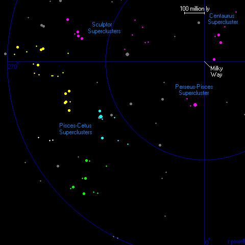

The superclusters in the Pisces-Cetus area of the sky are very large structures that together stretch across a billion light years of space (and 50 degrees of the sky). At an average distance of 800 million light years, they are also very faint. On this plot of galaxies brighter than magnitude 16 (from the HyperLeda database), the superclusters are hard to see because of the huge quantities of foreground galaxies. The major clusters of galaxies which are marked on this plot reveal the true extent of these superclusters.
Below is a list of the major clusters of galaxies in the Pisces-Cetus Superclusters. These are the clusters in the three main supercluster regions. There are several other major clusters of galaxies not included in this list which can also be found in this region. The Pisces-Cetus region of the sky is rich in galaxy clusters.
1 2 3 4 5 6 7
Abell Equatorial Redshift Distance Rich Notes
Number Coordinates z Mly
RA Dec
A76 00 39.8 +06 46 .0393 540 0
A119 00 56.4 -01 16 .0430 590 1
A147 01 08.2 +02 10 .0435 595 0
A160 01 12.9 +15 31 .0435 595 0
A168 01 15.2 +00 15 .0438 600 2
A193 01 25.1 +08 42 .0476 650 1
A195 01 26.9 +19 11 .0418 570 0
A2660 23 45.3 -25 58 .0513 700 0
A4049 23 51.6 -28 22 .0636 860 0
A4053 23 54.8 -27 40 .0708 955 1
A2683 23 57.6 -25 33 .0719 970 0
A2716 00 02.9 -27 10 .0669 905 0
A2734 00 11.3 -28 52 .0613 830 1
A14 00 15.2 -23 53 .0643 870 0
A27 00 24.8 -20 42 .0530 720 0
A2794 00 36.6 -31 01 .0608 825 1
A2800 00 38.0 -25 06 .0624 845 1
A74 00 38.9 -22 19 .0639 865 0
A85 00 41.6 -09 21 .0543 740 1
A86 00 42.5 -21 48 .0622 840 0
A87 00 43.0 -09 48 .0538 730 1
A2824 00 48.6 -21 21 .0570 775 0
A114 00 53.7 -21 41 .0575 780 0
A117 00 56.0 -10 02 .0523 710 0
A121 00 57.5 -07 01 .0538 730 1
A126 00 59.8 -14 13 .0534 725 1
A133 01 02.6 -21 48 .0554 755 0
A151 01 08.9 -15 25 .0521 710 1
A150 01 09.2 +13 10 .0576 780 1
A152 01 09.8 +13 59 .0569 770 0
A154 01 11.0 +17 40 .0624 845 1
A158 01 11.8 +16 53 .0633 855 0
A171 01 16.8 +16 16 .0694 935 0
A179 01 21.8 +19 29 .0535 725 0
A225 01 38.9 +18 53 .0675 910 1
A257 01 49.0 +13 59 .0691 930 1
A292 02 02.5 +19 05 .0652 880 0
A311 02 09.2 +19 43 .0649 875 0
|
Column 1: The name/number of the cluster.
Column 2: The Right Ascension for epoch 2000.
Column 3: The Declination for epoch 2000.
Column 4: The redshift of the cluster.
Column 5: The distance in millions of light years assuming H=70km/s/Mpc.
Column 6: The 'richness' class of the cluster.
Column 7: Additional names and notes.
References:
Abell G, Corwin H, Olowin R, (1989), A catalogue of Rich Clusters of Galaxies,
Astrophys J Supp, 70, 1.
Struble M, Rood H, (1999), A compilation of redshifts and velocity dispersions for
ACO clusters, Astrophys J, 125, 35.

This is a map of the supergalactic plane out to a distance of 1 billion light years. Plotted onto this map are all of the rich clusters of galaxies which lie near this plane. The Pisces-Cetus superclusters (marked in blue, yellow and green) form long wall structures across a billion light years of space. Not shown on this map are the thousands of smaller groups of galaxies which are also found in these superclusters.
Below - a picture of the A151 cluster of galaxies which lies about 700 million light years away. This is one of many rich clusters of galaxies in the Pisces-Cetus region. The bright central galaxy (actually two very close galaxies) in this picture is IC 77.
There has not been much research on the Pisces-Cetus superclusters. The superclusters were made famous by Brent Tully in several papers (1, 2, 3) published between 1986 and 1988. He tried to show that the Pisces-Cetus supercluster was contained in a much larger structure connecting many superclusters including the Virgo supercluster. This is true, but only because all superclusters are connected to each other through walls and sheets of galaxies. Brent Tully's 1986 paper also contains some maps of the Virgo supercluster.
In 1988, J Burns, J Moody, J Brodie and D Batuski studied some of the galaxies in this region. They surveyed the northern part of the Pisces-Cetus supercluster and published a map showing that in this region there are several large voids where very few galaxies exist.
Above - a picture of the centre of the A168 cluster of galaxies. This is one of the richest clusters of galaxies in the Pisces-Cetus superclusters - it contains hundreds of galaxies.